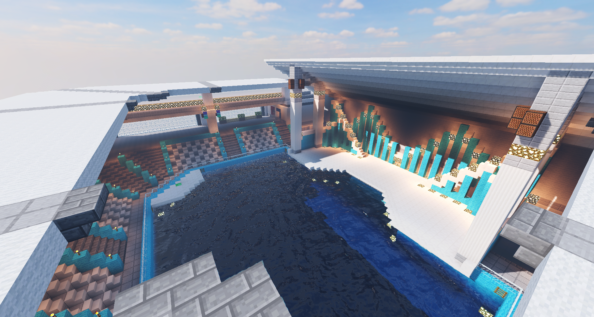

開催されるアリーナの紹介
#1 ❝CITY❞

#2 ❝AQUARIUM❞
#3 ❝HARBOR❞

#4 ❝SHOPPING MALL❞

#5 ❝FACTORY❞
特殊ブロックの紹介
ジャンプブロック
 プレイヤーがこのブロックに乗ると、高く空へと飛ばし上げます。
プレイヤーがこのブロックに乗ると、高く空へと飛ばし上げます。
このブロックによる飛躍力はLeaperには及びませんが、一時的な射撃の回避や高所の位置取りにはもってこい。
うまく応用をすれば敢えてこのブロックへ落下中にParallelを使用したり、Hazeをこのブロックの上に罠として設置して置いたり。
不利位置からの一発逆転ショットもきっとできることでしょう。
偏差撃ちをしっかり覚えてしまえば無双できるかもしれません。
加速ブロック
 プレイヤーがこのブロックに乗ると向いている方向へと加速させます。
プレイヤーがこのブロックに乗ると向いている方向へと加速させます。
向いている方向ですので、首の向きによって方向が変わります。
斜め上を向いて使えば、目の前のちょっとした高さの障害物は飛び越えられるでしょう。
咄嗟に首の向きを調節して障害物や隙間を飛び越えたりできる難易度が高めなブロックですので練習が必要かもしれません。